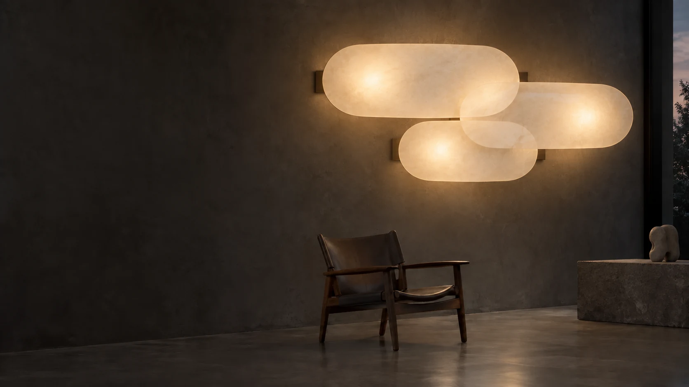
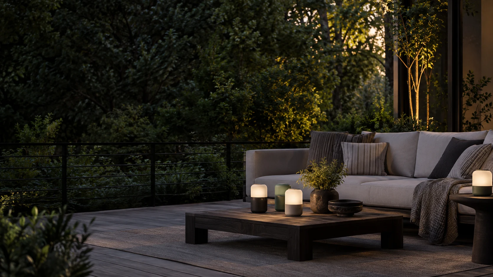
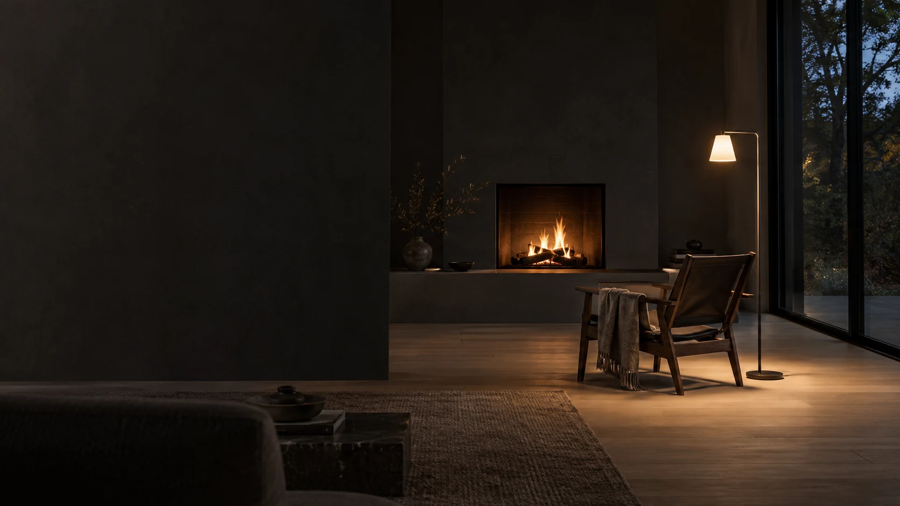
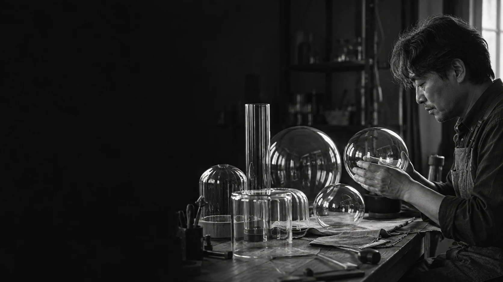

벽에 번지는 부드러운 빛
형태로 고르는 조명
테이블, 펜던트, 벽과 바닥. 놓이는 자리마다 빛의 역할이 달라집니다.
기구의 형태와 빛이 닿는 방향을 함께 살펴보세요.
1 – 3 / 6

빛을 가까이,
밤을 조금 더 길게.
빛은 방을 밝히고, 생활의 분위기를 바꿉니다. 늦은 저녁의 낮은 빛, 읽는 자리로 향하는 빛, 식탁에 모인 사람들을 비추는 빛. 켜기 전의 형태와 켰을 때의 표정을 함께 보며, 익숙한 공간에 어울리는 조명을 찾아보세요.

하루가 끝나는 자리,
조금 낮은 빛.
당신의 공간에 놓아 보세요.
한 끼를 나누는 식탁, 잠들기 전의 침실, 책을 읽는 거실.
익숙한 공간에서 조명이 놓일 자리와 빛이 머무는 모습을 살펴봅니다.
빛과 함께 보는 형태.
스위치조명은 기구와 공간을 함께 바라봅니다.
유리와 금속, 곡선과 직선. 빛을 담는 재료와 형태에서 선택의 단서를 찾습니다.

빛을 담는 형태를
살펴봅니다.
조명을 고르는 다른 시작점.
, , , , , 생활 속의 빛.
모든 조명 종류 보기빛이 필요한 자리를 함께 생각해요.
공간의 사진과 쓰는 시간, 지금 불편한 점에서 시작합니다.